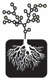

Center for Digital Storytelling

Website:
http://storycenter.org Location:
Berkeley, CA
The Center for Digital Storytelling, located in Berkeley, is a community arts center focused on multimedia/digital video training and production. Since the early 1990s, our programs have been exploring the role that personal narrative, storytelling, and new media can play in education, community arts, and social change contexts. We offer beginning-level training workshops in scripting, digital image manipulation, and digital video editing; collaborate with universities and community-based organizations across the U.S. and internationally, to train trainers in our digital storytelling workshop process; and provide one-on-one support for individual multimedia, web, and digital video projects.
Project Description:
Project Details
We are seeking a CTCVISTA volunteer to assist with the our communications systems, specifically in regards to the development of a series of Project Initiative websites, and the internal and external communications mechanisms for project planning and development. This work would include web design and management, integration of social networking tools for initiative projects, communication support for project partners, interviews and podcasts with initiative participants, the development of online evaluative forms and database.
How you determined the need for this project
Despite our success over the last several years, we remain a small organization, built around minimal infrastructure. Our capacity to expand was hostage to our model of reactive planning and living from one project to the next. In 2008, our organization sought to re-orient our planning by engaging our board and staff in the development of a series of Strategic Program Initiatives, allowing us to partner more effectively with organizations to create long term, sustained programs using digital storytelling. In order to expand we needed to improve our internal and external communications systems. Working with Laura Hadden and Carrie Cook, our 2008-2009 CTC Vista members, we were able to enhance our communications systems and update our website. We identified several additional projects as part of our initiative planning.
We are hopeful this work will assist with the generation of additional income for our organization via some increased fund-raising as part of our bi-annual open house events, support for initiative grants and in-kind support in technology and volunteers for the program.
The evaluation component will be a background goal to the primary goal of communications. We expect Goal 2 of the Volunteer Assignment description to represent less that 15% of the time allotted.
Why this project is timely?
There are six initiatives being developed by staff for 2009-2010. They represent a fundamental shift in our organizational services to the field of non-profits, social service and educational organizations. The process of implementing the initiative process requires the evolution of our communication systems at all levels, as well as significant production and distribution of content.
Here-UR - Urban Research and Service Learning
Working with storymapping, we will partner with organizations around the country to operate a series of residencies within communities to train college students to act as coaches to local mapping projects.
Witness Tree: Stories for a Changing Planet
Capturing stories about the environment and global climate change, from the perspective of the holders of local wisdom.
Stories-of-Care –
CDS will expand on the success of several projects that explored the
therapeutic applications of digital storytelling with low-income, at-risk
populations affected by violence and other social issues.
Bridging Gaps, Supporting Rights
CDS has linked with service organizations in several states to use digital
storytelling as a means of assisting immigrants with transitions in identity, family, language, and citizenship.
Girls and Women in Civic Leadership
CDS will join with service organizations addressing gender-based strategies
to encourage leadership and civic engagement among poor and immigrant women and girls.
For Our Selves, For Our Patients - Stories for Humanizing Healthcare
CDS will continue its ongoing work with healthcare professionals to look at digital storytelling as a evaluative tool for assessing healthcare provision and as a tool for training providers on the provision of quality care.
As mentioned above, these initiatives are a critical shift in our approach to planning and growth. The initiatives will be managed through the CDS National Office in Berkeley with the development of outreach strategies, training materials, study guides, promotional and development materials, project management support, and the archiving and post-production of stories.
How the project would increase community engagement?
Through this work, we hope that our efforts to support communities across the country will become vastly more effective. We are confident that the methods, practices, curriculum, and stories emerging from these initiatives will be embraced by numerous local, regional, and national partners working directly with the identified communities. The materials that we develop will be also broadly disseminated through partnerships like StoriesforChange.net and our International Day for Sharing Life Stories campaign.
How the project relates to other activities or elements of your organization or community?
As suggested above, the communications systems support will be directly tied to the major priorities of our organization in 2009-10.
Project Tangibles:
As with all of CDS’ work as a service provider we will make the materials
from our initiatives, case studies, curricula, project development
narratives, and stories available to the field and general public. Our open
source perspective has served us in our 15 years of operation, allowing
1,000s of grassroots, independent organizations and individuals to learn our
methods and applications. With new websites, DVD compilations, digital
stories, articles and surveys will be created from our initiative
implementations. Internally we will enhance our archive database and
post-production management systems, and other information systems servicing a given initiative or the initiative process. Our last three VISTA members have made a huge number of advances for our operations, moving us into the online social networking world and cloud computing, for example, in ways that have revolutionized our organizational functioning.
Supported Projects
Communications Coordinator
Oriana Magnera
9/2009 — 9/2010
We are seeking a CTCVISTA volunteer to assist with the our communications systems, specifically in regards to the development of a series of Project Initiative websites, and the internal and external communications mechanisms for project planning and development. This work would include web design and management, integration of social networking tools for initiative projects, communication support for project partners, interviews and podcasts with initiative participants, the development of online evaluative forms and database.
AmeriCorps*VISTA member will work with CDS staff to organize CDS information systems to support our organizations efforts including:
1. internal staff site for communication and information sharing,
2. public website (story theater, newsletter, curriculum, podcasts, program initiative kit),
3. marketing materials and activities (public screenings, brochures, email information campaigns, video PSA’s, surveys),
4. Training for staff, intern and volunteer in implementation of Initiative-based systems
Principal Task: Internal and External Communications including web, electronic and printed materials. Oriana created a new and professional looking electronic and web quarterly newsletter featuring the Program Initiatives for the first time. She created a newsletter template, staff training materials, a form for collecting newsletter submissions, imported and organized thousands of contacts, managed the list and added new names on a quarterly basis. She completed both ongoing website updates as well as a round of improvements to the layout and information on the website. She began research for a new platform and web hosting service as well as prepared information about applying for a Tap Root Grant for web and marketing support which CDS will pursue in the spring of 2011. Creation of “Donate Now” button for CDS website to collect financial/in-kind donations. Creation of a multi-page guide to newsletter production and distribution.
Secondary Task: Oriana has also began making improvements in our internal communications. She has assisted with organizing materials on our internal Staff Site, managed any trouble-shooting issues with our email and web provider, and sent emails to our Program Initiative teams to collect information to place on the Staff Site as needed. She completed a Grant Writing Seminar and gathered and organized current and past grant proposals and resources from staff to place on the Staff Site for reference.
Greatly improved external communication and marketing through newsletter and public website. More connectivity between staff through email and internal staff site.
Oriana also undertook a complete re-layout of our book entitled Digital Storytelling: Capturing Lives, Creating Community. This task included converting book files from Framemaker to InDesign, revisions on every page of the book, as well as research for updating Technology Appendices and re-indexing the entire book.
Digital Story Archiving
Patrick Castrenze
7/2009 — 7/2010
CDS has on archive over 6000 digital stories, the largest archive of digital stories in the world representing 16 years of work, and we continue to capture as a national/international organization more than 800 stories per year. The archival system has evolved slowly over the last decade, we can identify the location of the vast majority of stories by the workshop name and date, but we lack a robust system of managing the stories based on meta-data tags and client name. To secure the archive for future generations we need to maintain a robust system, and enhance its capabilities. The capacity to fully integrate effective archival practices into all of our workshops and post-production processes is an invaluable contribution to the field.
We are seeking a CTCVISTA member to help develop our Archive and Post Production Technical Support systems. This work would include:
Reviewing existing archive project and systems, research comparable systems in other organizations: enhancing and developing database systems for our movie archive; enhancing and developing post-production systems for managing participant data, update materials for post production process and software tutorials, DVD and Website templates for publication; developing model research/curatorial projects for each initiative process using archive as basis for examining relevant issues in connection to poverty.
The CTC Vista will work with the Supervisor/Technical Director to further develop and enhance two major systems of our organization, the CDS story archive and CDS Post-Production system
The tasks will include:
1. Review existing archive project and systems, research comparable systems in other organizations
2. Enhance and develop database systems for our movie archive.
3. Enhance and develop post-production systems for managing participant data
4. Develop model research/curatorial projects for each initiative process using archive as basis for examining relevant issues in connection to poverty.
Principal Task: Archive.
Accomplishments: Research best/appropriate RAID system for CDS archive of story data. Arranged for purchase of system. Migrated data onto new system. Met all deadlines. Research and purchasing assistance from Apple Certified Support Professional, Clinton Gilbert. Migration assistance from Jennifer Nazzal, CDS Post Production Supervisor. Needs analysis and design of custom organizational system to accommodate over 8TB of story data covering over 10 years of various types of Digital Storytelling workshops and projects conducted around the world. Set-up, installation and troubleshooting of dedicated computer station to operate the RAID. Review and organization of over 8TB of story data into custom system. Collection and integration of additional data from 4 Field office staff members. Creation of record of files for review purposes. Creation of multi-chapter guide for institutional use of the RAID system and data management. Training of staff and interns for continuation of RAID maintenance. Archive intern selection and management overseeing data entry by archive interns during May-July.
Additional Archive Task: CDS Online Story Theater.
Accomplishments: Organized existing data and back-end of Theater. Compiled new submission form for CDS Staff to submit entries to Theater. Compiled new stories and associated data and added to Theater. Participated in promoting new stories in CDS quarterly newsletter. Creation of mulit-chapter guide for institutional use of the Online Story Theater platform and back-end data management. Training of staff and interns for continuation of Story Theater.
Patrick also undertook a complete proof-reading of our book entitled Digital Storytelling: Capturing Lives, Creating Community. This task included revisions on nearly every page of the book as well as considerable copy-editing of our new revised curriculum chapter: The Seven Steps of Digital Storytelling.
Digital Storytelling Web Development
Laura Hadden
1/2008 — 7/2009
Our AmeriCorps*VISTA member will assist with CDS ongoing work in Community Digital Storytelling, both developing capacity for our community-based programs in the Bay Area, and working to assist the development of the Stories for Change Website and networking work among local,national and international organizations involved in Digital Storytelling with grassroots communities.
Theier tasks will include:
a)providing organizing and outreach capacities for workshops organized by CDS in collaboration with local partners including Youth Uprising, Art in Action, Girls Inc., and Marin Youth Center,
b)Assisting with a youth-focussed Digital Storytelling video festival at Oakland’s Parkway theater and San Francisco’s Zeum,
c) Assisting with editorial work, continued outreach, and helping to design an online training tool to help organizations use the Stories for Change Portal, and
d)assisting with the organizing and follow-up for the Community Digital Storytelling Gathering in Tuscon, Arizona, Spring of 2007.
Laura Haddon Manages storiesforchange.net, a website for uploading digital stories and disseminating resources to facilitators of digital storytelling. She monitors the website, responds to user questions, helps resolve technical issues, facilitates content development and has implemented an initiative to broaden the steering committee and create an advisory board for the site as part of a strategic initiative to increase website utilization.
She has also worked on Center for Digital Storytelling’s (CDS) Silence Speaks website (www.silencespeaks.org) that focuses on disseminating digital stories of individuals that have survived violence and was in charge of updating content on the International Day for Telling Life Stories site (www.ausculti.org). This was an international initiative for promoting the importance of life stories, especially stories of marginalized voices, for developing solidarity and understanding in communities and across borders.
She has also participated in various CDS media and outreach campaigns, and will be involved in strengthening our internal digital story archiving system in order to better serve our workshop participants.
“They are both invaluable in terms of training staff in how to use the technology and being able to offer ideas about the potential of the technology for improving our services. In particular, Laura has been able to leverage past experience in the non-profit sector. She came to us with media and outreach experience and is comfortable framing the work of CDS in terms that other professionals in the sector can easily understand. Her leadership skills have allowed her to go to conferences and speak confidently about how digital storytelling is effective as a tool for personal healing and transformation, as well as effectively communicating new information to a variety of stakeholders, constituencies and key decision makers.”
- Andrea Spagat, supervisor
Youth Education Organizer
Carrie Cook
1/2008 — 7/2009
Our AmeriCorps*VISTA member will help develop capacity for CDS ongoing educational work with classroom-based and after-school programs serving low income communities nationally and in the Bay Area and nationally. Some of their tasks will include:
a)Building the online capacity for workshops for CDS’ after school work in StoryMapping (see storymapping.org),
b)helping to develop the Youth Digital Storytelling Cookbook, handouts and curriculum materials, and
c)developing curriculum with workshops in collaboration with youth afterschool organizations emphasizing literacy, writing and technology including 826Valencia/826National and Youth Speaks.
Carrie Cook Carrie has focused on developing our internal systems that support expanding services to low-income individuals. She has developed our tutorial for embedding digital stories in community maps and assisted with the development of digital stories for a Tuscaloosa, Alabama-based project supporting residents of low-income housing. She has also been involved with developing outreach materials for the silence speaks project and a blog for educators who are implementing skills learned in our workshops in their classrooms. The blog will allow them to more effectively utilize digital storytelling with their stories. In addition, she supported website development and local event organizing for the International Day for Telling Life Stories. She will also participate in strengthening our internal digital story archiving system.
“Both Carrie and Laura have demonstrated a collaborative spirit and have used their technical expertise to support our organization’s mission. In particular, their knowledge of Web 2.0 technologies is an asset to an organization in which staff have differing levels of experience with both newer web technologies. They are both invaluable in terms of training staff in how to use the technology and being able to offer ideas about the potential of the technology for improving our services. […] Carrie has utilized the knowledge base with which she came to CDS to strengthen our program structures and increase our resources and the effectiveness of our programs. She has been especially helpful in setting up new computers, creating a ‘storywalk’ tutorial and supporting the development of outreach materials.”
- Andrea Spagat, supervisor
Website and Youth Curriculum Building
Jessica McCoy
9/2006 — 9/2007
Jessica McCoy focused on creating opportunities for people from underserved communities to access and become active users of multimedia technology. She was brought into Center for Digital Storytelling to support a number of projects that focus on those goals. The two major employment objectives were to support the storiesforchange.net site CDS organized together with MassImpact in Boston, and to make our curriculum more youth friendly. Her other responsibilities included learning the digital storytelling methodology to support workshops in underserved communities.
The first objective, developing the Stories for Change Website was greatly successful in helping distribute digital storytelling videos and curriculum to trainers and participants. The website is now currently live and growing, with many resources collected and uploaded by Jessica, in addition to coordinating a large number of trainers that, until now, were unorganized. In regard to the second objective, making the curriculum more youth friendly, Jessica stepped in a gathered the needed resources to successfully complete the project. She drew on her own experience working with youth. She also brought CDS staff with additional youth and curriculum development experience into ongoing planning meetings.
Related Content
None created yet!